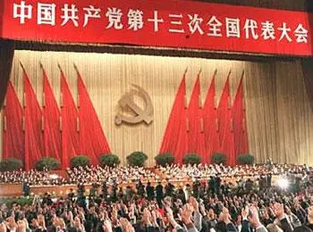
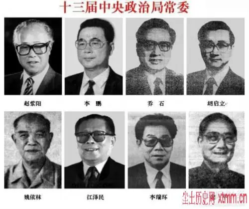
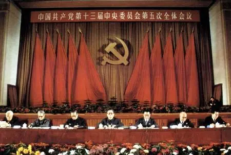

党的十三大

正确认识党和人民事业所处的历史方位和发展阶段，是中国共产党明确阶段性中心任务、制定路线方针政策的根本依据，也是中国共产党领导革命、建设、改革不断取得胜利的重要经验。

“我国的社会主义社会还处在初级阶段。我们必须从这个实际出发，而不能超越这个阶段”“坚持四项基本原则和坚持改革开放这两个基本点，相互贯通，相互依存，统一于建设有中国特色的社会主义的实践”……1987年10月25日至11月1日，党的十三大作出的重大判断和科学论断，引起会场内外强烈共鸣。

党的十一届三中全会召开后，广大人民群众的创造活力得到充分释放，生产力获得新的解放，国家面貌发生了巨大而深刻的变化。改革开放实践、中国特色社会主义事业的不断推进，迫切需要党在深刻分析基本国情、总结实践经验的基础上，对什么是社会主义、怎样建设社会主义，以及我国改革开放和社会主义现代化建设的基本路线，从理论和实践上进一步作出明确回答。